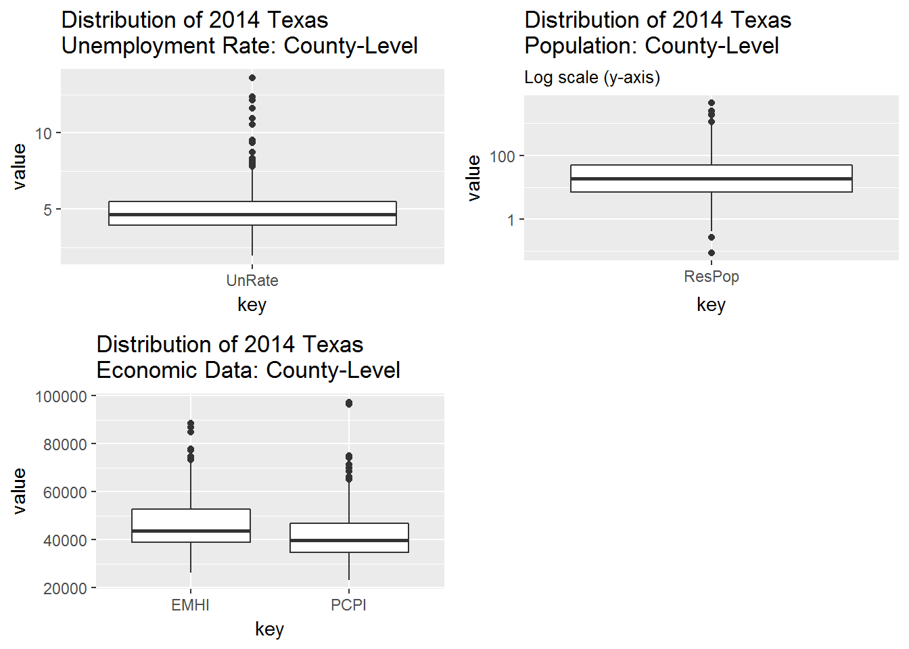

Here is a look at some of my exploratory graphs from my analysis of the 2016 Texas Presidential Primary economic data. The economic data comes from FRED (Federal Reserve Economic Data) and is actually from 2014.
In this post, I’ll focus on plotting income data against population and unemployment data. In future posts I’ll explore the longer timeline of economic data - stretching back to the 1990’s.
Examining the Data
If you want to know more about the dataset used in this post, you can jump down to the About section at the bottom fo the page. But here is how the data looks:
FRED## # A tibble: 254 × 5
## CountyName UnRate ResPop PCPI EMHI
## <chr> <dbl> <dbl> <dbl> <dbl>
## 1 anderson 4.641667 57.742 31815 42471
## 2 andrews 2.983333 17.457 54928 66878
## 3 angelina 5.216667 87.875 37132 42128
## 4 aransas 5.541667 24.933 43292 44551
## 5 archer 4.508333 8.808 52139 58867
## 6 armstrong 3.158333 1.948 43290 55177
## 7 atascosa 4.925000 47.812 37172 52785
## 8 austin 4.750000 28.994 46741 58792
## 9 bailey 5.025000 6.960 44960 36821
## 10 bandera 4.766667 20.916 40868 50107
## # ... with 244 more rowsFor this dataset, each column is a variable from 2014.
CountyName= Texas county (lower-case name)UnRate= Unemployment Rate (%)ResPop= Residential Population (1,000 persons)PCPI= Per Capita Personal Income ($)EMHI= Estimated Median Household Income ($)
Plotting the Data
The code used to generate the plots below comes from the ~/Code/FRED_plotData.R file.
Boxplots
Basic
An unfaceted look at each variable.
NOTE: I added a log scale to the y-axis in the population boxplot below. This is because many of Texas’ counties have small populations (min = 87 in Loving County) while only a handful or so have very large populations (max = 4,447,577 in Harris County).

Take-aways:
- We can see that household incomes (
EMHI) are higher than per capita incomes (PCPI). PCPIhas a larger outlier thanEMHI, perhaps becausePCPIis a per capita (average) variable whileEMHIis median variable.
With Cuts
Cutting and grouping the population and unemployment data into nearly equal intervals (~32 counties each interval).


Take-aways:
- First plot (population vs income)
- Very large counties have higher median
EMHI(household income) than small to large counties. - Small to medium size counties tend to have larger median
PCPI(personal income) than any other size county. For instance, Hansford County has a PCPI of $75,035 but a small population of 5,537 people. - The above two observations could be due to lower employment:population ratios in rural areas (making
PCPIhigher for rural areas) and a higher a number of employed persons per household in urban areas (makingEMHIhigher for urban areas).
- Very large counties have higher median
- Second plot (unemployment vs income)
- There is an (obvious) inverse relationship between unemployment and income:
- The higher the unemployment rate, the lower the income.
- The lower the unemployment rate, the higher the income.
Another view
In the two sets of plots below, I’ve changed the groupings into facets - so each boxplot gets its own area.


And flipping the facets in facet_grid() produces an interesting view, as well.


Density
Basic
I’m going to leave out histograms for now and focus on histograms. An unfaceted look at each variable:

Take-aways:
- Both income variables are positively skewed (lean toward the left).
With Cuts
I’ll take the cutting procedure from the boxplots and apply it to the density plots. This time though I’ll add two lines:
- median (solid)
- mean (dashed)

Take-away:
- In the largest 32 counties,
EMHIvalues are spread wide (kurtically flat) and they are weakly distributed more toward lower values (positively skewed), for the most part.
Other views
Stacked

Take-away:
- You can see a shift in the peaks of the various ranges. This is kind of like seeing a shift in the median of the ranges.
Filled

Take-away:
- The tail-end distributions stand out more when using the filled density plot.
About the Data
The data used in this post is a merger of two data sets:
FRED_2012= contains all income, population, unemployment, and education dataFRED_2014= contains all income, population, and unemployment data; does NOT contain education data
I ended up merging the 2012 education data with the 2014 data.=, but did not use it for this post.
Getting the Data
Raw Data
Source files can be found in:
- ~/Code/Fred_getdata.R
- ~/Code/Fred_getdata2.R
- ~/Code/Fred_getdata3.R
- ~/Code/Fred_mergedata.R
Filtered Data
Here is how to merge the two data sets.
# Filter Data -------------------------------------------------------------
.FRED <- FRED_2014 %>%
select(CountyName,
UnRate,
ResPop,
PCPI,
BachDegree,
HSDegree,
EMHI)
.FRED$BachDegree <- FRED_2012$BachDegree # replace 2014 education data w/ 2012
.FRED$HSDegree <- FRED_2012$HSDegree # replace 2014 education data w/ 2012Working Data Frame
And to keep things simple, for this post, I removed the education data.
# Filter Out Education Data -----------------------------------------------
FRED <- .FRED %>% select(-BachDegree, -HSDegree)